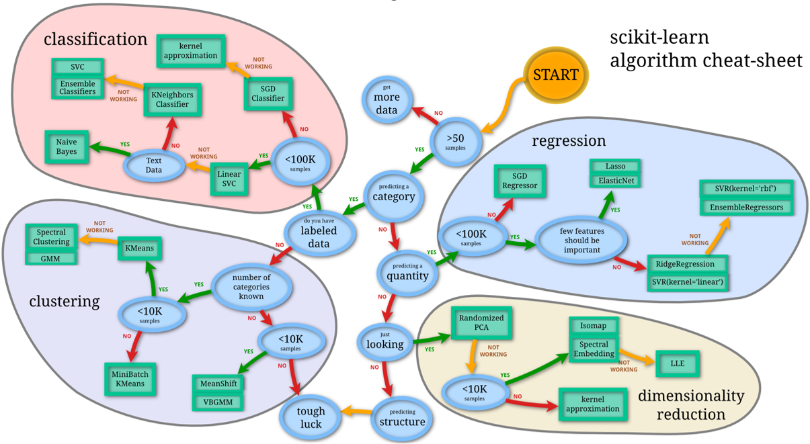
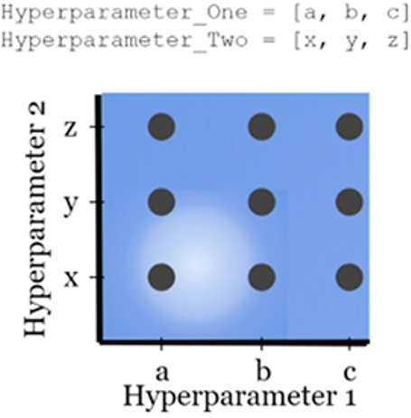
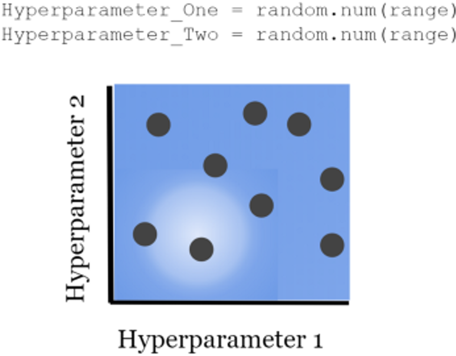

Model Tuning#
import numpy as np
import pandas as pd
from sklearn.model_selection import train_test_split, GridSearchCV, RandomizedSearchCV
from sklearn.linear_model import Ridge
from sklearn.metrics import r2_score
from sklearn.pipeline import Pipeline
from sklearn.impute import SimpleImputer
from sklearn.preprocessing import StandardScaler, MinMaxScaler
from sklearn.svm import SVR
from scipy import stats
Selecting the right model#
Parametric model = model ที่ถูก represented โดย parameter เช่น linear regression, logistic regression, SGD, neural networks
Non-parametric model = model ที่ทำนายจากการกระจายตัวของข้อมูล เช่น KNN, SVM, decision trees
Model complexity VS dataset size (rule of thumb)
หากมีมากกว่า 100,000 datapoints ควรใช้ parametric models
หากมีน้อยกว่า 100,000 datapoints ควรใช้ non-parametric models

Hyperparameter tuning#
Model tuning เป็นการหาชุด hyperparameter ที่ดีที่สุด (ห้ามใช้ test set) ทำได้ 2 วิธี ได้แก่ grid search กับ random search
Grid search#
เตรียมค่าหลาย ๆ ค่าของแต่ละ hyperparameter แล้วหา combination ที่ดีที่สุดโดยทำ cross validation เพื่อวัด performance ของ model ที่มี hyperparameter ชุดต่าง ๆ เราสามารถเอา model ที่ดีที่สุดไปใช้ต่อได้เลยโดยไม่ต้อง train ใหม่
Grid search ทำได้โดยใช้ sklearn.model_selection.GridSearchCV

# Import data and drop duplicates
df = pd.read_csv('../data/fish_no_pikes.csv').drop_duplicates()
# Separate features (X) and target (y) for regression task
X, y = df.drop(columns=['Species', 'Weight']), df['Weight']
# Train-test split
X_train, X_test, y_train, y_test = train_test_split(X, y, test_size=0.2, random_state=1)
# Instantiate model
model = Ridge()
# Hyperparameter grid - 3x4=12 combinations
grid = {
'alpha': [0.01, 0.1, 1],
'solver': ['svd', 'cholesky', 'lsqr', 'sparse_cg']
}
# Instantiate grid search
search = GridSearchCV(
model,
grid,
scoring='r2',
cv=5, # 12 hyperparameter combinations x 5-fold cross-validation = 60 models to be trained
n_jobs=-1 # Paralellise computation
)
# Fit data to grid search
search.fit(X_train, y_train)
GridSearchCV(cv=5, estimator=Ridge(), n_jobs=-1,
param_grid={'alpha': [0.01, 0.1, 1],
'solver': ['svd', 'cholesky', 'lsqr', 'sparse_cg']},
scoring='r2')In a Jupyter environment, please rerun this cell to show the HTML representation or trust the notebook. On GitHub, the HTML representation is unable to render, please try loading this page with nbviewer.org.
GridSearchCV(cv=5, estimator=Ridge(), n_jobs=-1,
param_grid={'alpha': [0.01, 0.1, 1],
'solver': ['svd', 'cholesky', 'lsqr', 'sparse_cg']},
scoring='r2')Ridge()
Ridge()
# The r2 score of the model with the best combination of hyperparameters
search.best_score_
0.8668853305521438
# The best combination of hyperparameters
search.best_params_
{'alpha': 1, 'solver': 'lsqr'}
# The best model (เอาไปใช้ต่อได้เลย ไม่ต้อง train ใหม่)
best_model = search.best_estimator_
best_model
Ridge(alpha=1, solver='lsqr')In a Jupyter environment, please rerun this cell to show the HTML representation or trust the notebook.
On GitHub, the HTML representation is unable to render, please try loading this page with nbviewer.org.
Ridge(alpha=1, solver='lsqr')
# Make predictions using the best model
y_pred = best_model.predict(X_test)
# Compute r2
r2_score(y_test, y_pred)
0.9115608827455488
Random search#
เหมือนกับ grid search แต่เราเตรียมค่าของ hyperparameter โดยการสุ่ม
Random search ทำได้โดยใช้ sklearn.model_selection.RandomizedSearchCV

# Instantiate model
model = Ridge()
# Hyperparameter Grid
grid = {
'solver': ['svd', 'cholesky', 'lsqr', 'sparse_cg'],
'alpha': stats.loguniform(0.01, 1)
}
# Instantiate Grid Search
search = RandomizedSearchCV(
model,
grid,
scoring='r2',
n_iter=100, # number of draws
cv=5,
n_jobs=-1
).fit(X_train, y_train)
# The best model
search.best_estimator_
Ridge(alpha=0.9855018444846124, solver='cholesky')In a Jupyter environment, please rerun this cell to show the HTML representation or trust the notebook.
On GitHub, the HTML representation is unable to render, please try loading this page with nbviewer.org.
Ridge(alpha=0.9855018444846124, solver='cholesky')
Grid/random search ใช้หา combination ของ model/Transformer/pipeline ที่ดีที่สุดก็ได้
# Create a preprocessor to impute and scale features
preprocessor = Pipeline([
("imputer", SimpleImputer()),
("scaler", StandardScaler())
])
# Connect an SVR with the preprocessor
svr = Pipeline([
("preprocessor", preprocessor),
("svr", SVR(epsilon=.1, kernel='linear', C=10))
])
svr.named_steps
{'preprocessor': Pipeline(steps=[('imputer', SimpleImputer()), ('scaler', StandardScaler())]),
'svr': SVR(C=10, kernel='linear')}
svr.get_params()
{'memory': None,
'steps': [('preprocessor',
Pipeline(steps=[('imputer', SimpleImputer()), ('scaler', StandardScaler())])),
('svr', SVR(C=10, kernel='linear'))],
'verbose': False,
'preprocessor': Pipeline(steps=[('imputer', SimpleImputer()), ('scaler', StandardScaler())]),
'svr': SVR(C=10, kernel='linear'),
'preprocessor__memory': None,
'preprocessor__steps': [('imputer', SimpleImputer()),
('scaler', StandardScaler())],
'preprocessor__verbose': False,
'preprocessor__imputer': SimpleImputer(),
'preprocessor__scaler': StandardScaler(),
'preprocessor__imputer__add_indicator': False,
'preprocessor__imputer__copy': True,
'preprocessor__imputer__fill_value': None,
'preprocessor__imputer__keep_empty_features': False,
'preprocessor__imputer__missing_values': nan,
'preprocessor__imputer__strategy': 'mean',
'preprocessor__scaler__copy': True,
'preprocessor__scaler__with_mean': True,
'preprocessor__scaler__with_std': True,
'svr__C': 10,
'svr__cache_size': 200,
'svr__coef0': 0.0,
'svr__degree': 3,
'svr__epsilon': 0.1,
'svr__gamma': 'scale',
'svr__kernel': 'linear',
'svr__max_iter': -1,
'svr__shrinking': True,
'svr__tol': 0.001,
'svr__verbose': False}
# Hyperparameter grid
grid = {
'svr': [SVR(), Ridge()],
'preprocessor__scaler': [StandardScaler(), MinMaxScaler()]
}
# Grid search
search = GridSearchCV(svr, grid, scoring='r2', cv=5, n_jobs=-1).fit(X_train, y_train)
# The best model
search.best_estimator_
Pipeline(steps=[('preprocessor',
Pipeline(steps=[('imputer', SimpleImputer()),
('scaler', MinMaxScaler())])),
('svr', Ridge())])In a Jupyter environment, please rerun this cell to show the HTML representation or trust the notebook. On GitHub, the HTML representation is unable to render, please try loading this page with nbviewer.org.
Pipeline(steps=[('preprocessor',
Pipeline(steps=[('imputer', SimpleImputer()),
('scaler', MinMaxScaler())])),
('svr', Ridge())])Pipeline(steps=[('imputer', SimpleImputer()), ('scaler', MinMaxScaler())])SimpleImputer()
MinMaxScaler()
Ridge()
Limitations#
Computationally costly เช่น model หนึ่งมี 2 hyperparameter เตรียมเอาไว้ 3 และ 4 ค่า ดังนั้นจะมีทั้งหมด 12 combination หากทำ 5-fold cross validation ครั้ง จะต้อง train ทั้งหมด 60 model
The history of optimization is not tracked.